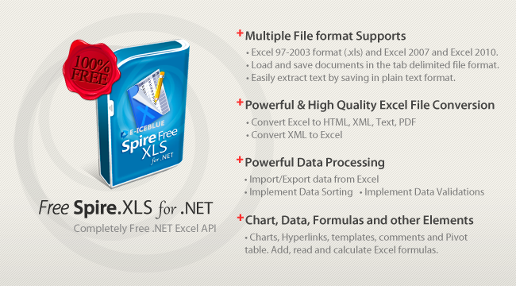

This is a C # example to manage Excel worksheet via a Free C# excel library. And the code gives you clear information of how to convert excel to PDF file in C#.
As a professional C# excel component, Free Spire.XLS for .NET enables developers to create, manage and manipulate Excel files on any .NET applications. It supports both for the old Excel 97-2003 format (.xls) and for the new Excel 2007 and Excel 2010, Excel 2013, Excel 2016 (.xlsx, .xlsm). Free Spire.XLS for.NET is 100% FREE .NET excel component.
Main Features:

Rich features—Free Spire.XLS for .NET offers a wide range of features and the main features are listed as below:
File Format Supports—Free Spire.XLS for .NET supports lots of file formats.
Powerful Data Processing
Powerful & High Quality Excel File Conversion--Free Spire.XLS for .NET has powerful conversion ability and it enables converting Excel files to most common and popular formats.
Create Excel Report from Comprehensive Workbook Designer
Free Spire.XLS for .NET enables developers to generate Excel workbook from scratch, or load a workbook from either folder or file stream. Developers can also save it to file, file stream or web response. Free Spire.XLS for .NET offers a wide range of security
features including Excel encryption/decryption, cells hide/unhide, and worksheets lock/unlock.
Freely operate worksheet
Free Spire.XLS for .NET enables developers to create, add, delete, rename, edit and move worksheet in either C#, VB.NET or ASP.NET. Developers can also copy, move, and consolidate across worksheets with full contents. This professional Excel .NET class library
also embeds many flexible options for displaying worksheets, such as page breaks, zoom-setting, freeze panes, headers/footers, print paper size and print area etc.
Easily Manipulate cells & Excel Calculation Engine at run time
Chart, Data and other Elements
How to Download and Install Spire.XLS
Download Spire.XLS for .NET here and you can get a zip package named Free Spire.XLS for .NET Version:7.3.5. Extract this package and get the .msi file. Double click this file and install Free Spire.XLS for .NET to the specified path on your system.
How to Use DLLS
Users need to add dll files in project as reference to perform Spire.XLS for .NET to compile.
There are several folders, which save dlls for different .NET Framework version under Bin directory. After creating a project, right click project name → Add Reference → Browse → Spire.XLS folder → Bin → .NET 2.0/3.5/4.0/4.5/4.0 ClientProfile
→ Spire.XLS.dll.
How to Run Demos
After installing, the sample projects for C#, VB.NET are put in respective folders: CS and VB. Choose one folder and run sample project in it.
There are two methods to run demos:
• Open the appropriate solution file (.sln) to get all projects this package has. To run the specified project, right click project name (for example Edit) → Debug → Start new instance. And then the result will be shown.
• Open Demos folder → WinForms folder → Specified directory (for example Quick Guide) → Specified Project folder (for example Edit) → Open appropriate project (.csproj) → Debug → Start Debugging or Press
F5.
Website: www.e-iceblue.com
Product Home:
Free Spire.XLS for .NET
Download:
Spire.XLS for. NET
Forum: Spire.XLS forum